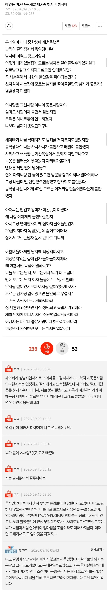

충분히 이해되는 상황이긴 하네
진짜 말그대로 모르는 아저씨와 어린 여자아이가 같이 단둘이 집에 있게 되는 상황인데
혹시라도 뭔 일 당하면 어린나이에 엄청나게 큰 타격이 올 수 있는데 ...
확률이 100에 하나라도 그 하나가 나면 그냥 인생 큰 타격 올 일임....
마음 편히 지내야할 집이 혹시나 모를 일을 두려워하며 지내야 한다면 그것도 사춘기 시절에 쉽지는 않을듯
보아하니 엄마 없이 새아빠와 단 둘만 있던 상황도 많았던걸로 보이네
히토미보면 아니던데